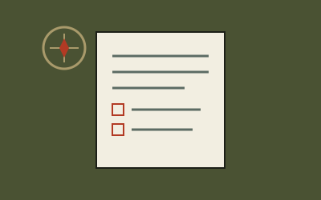
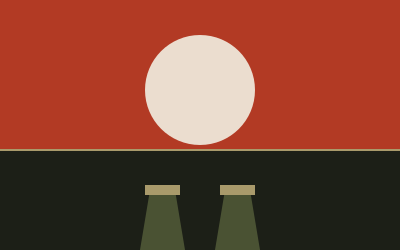
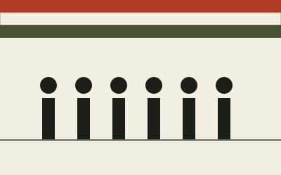
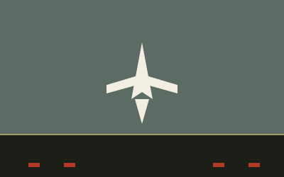

CDS 2026: Exam Pattern & Strategy Breakdown
A sector-by-sector look at the revised CDS paper — English, GK, and Elementary Mathematics — with a week-by-week prep plan.
Read dispatch →Dispatch No. 041 — Est. 2026
Sentinel Watch tracks the Army, Navy and Air Force, breaks down CDS & OTA exam strategy, and files current-affairs briefs — written for aspirants preparing to serve.

A sector-by-sector look at the revised CDS paper — English, GK, and Elementary Mathematics — with a week-by-week prep plan.
Read dispatch →
0500 hours to lights-out — a realistic hour-by-hour account of daily routine at the National Defence Academy.
Read dispatch →
Tri-services contingents, the marching bands, and this year's tableaux — what to watch for and why it matters for GK.
Read dispatch →
How fixed-wing and rotary operations are coordinated on a modern Indian Navy carrier deck.
Read dispatch →